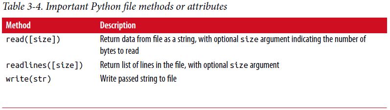
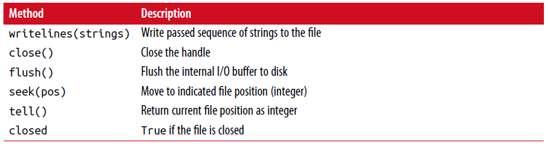

3.3 文件和操作系统¶
这本书大多数地方使用高层次工具如pandas.readcsv来从磁盘读数据文件到Python数据结构。 尽管如此，理解基本的关于Python中文件如何工作是很重要的。 幸运的是这很简单，这也是为什么Python在文本和文件处理中如此受欢迎的原因之一。
打开文件读写，使用内置的open函数，用相对路径或绝对路径:
In [207]: path = 'examples/segismundo.txt'
In [208]: f = open(path)
默认文件以只读模式打开。 然后我们就可以像一个列表一样对待文件句柄，像下面这样迭代文本行:
for line in f:
pass
来自文件的文本行以EOL标志完整性，所以你会经常看到在一个文件中得到没有EOL文本行的代码，像这样:
In [209]: lines = [x.rstrip() for x in open(path)]
In [210]: lines
Out[210]:
['Sueña el rico en su riqueza,',
'que más cuidados le ofrece;',
'',
'sueña el pobre que padece',
'su miseria y su pobreza;',
'',
'sueña el que a medrar empieza,',
'sueña el que afana y pretende,',
'sueña el que agravia y ofende,',
'',
'y en el mundo, en conclusión,',
'todos sueñan lo que son,',
'aunque ninguno lo entiende.',
'']
当你使用open创建文件时，完成后显式关闭文件是重要的。关闭文件可以释放它的资源返还给操作系统:
In [211]: f.close()
一种清理打开文件的简单方式是使用with语句:
In [212]: with open(path) as f:
.....: lines = [x.rstrip() for x in f]
在离开with代码块时将自动关闭文件f。
如果我们敲f = open(path, ‘w’), 一个新文件在examples/segismundo.txt将被创建（小心！）。重写在这个地方的任何文件。也有’x’文件模式，创建一个可写文件但是如果文件已存在将创建失败。 见表3-3 所有合法读写模式清单。
对于可读文件，一些尝试用的方法是read、seek和tell。 read返回文件中一定数量的字符。 什么构成”字符”由文件的编码（例如，UTF-8）确定，如果文件以二进制模式打开则只是原始字节:
In [213]: f = open(path)
In [214]: f.read(10)
Out[214]: 'Sueña el r'
In [215]: f2 = open(path, 'rb') # Binary mode
In [216]: f2.read(10)
Out[216]: b'Sue\xc3\xb1a el '
read方法使文件句柄的位置按读取的字节数递增(advance, 有前进之意)。 tell告诉我们当前位置:
In [217]: f.tell()
Out[217]: 11
In [218]: f2.tell()
Out[218]: 10
即使我们从文件中读取了10个字符，它的位置为11因为使用默认编码许多字节解码10个字符。你可以查一下sys模块中的默认编码:
In [219]: import sys
In [220]: sys.getdefaultencoding()
Out[220]: 'utf-8'
seek将文件位置更改为文件中指定的字节数:
In [221]: f.seek(3)
Out[221]: 3
In [222]: f.read(1)
Out[222]: 'ñ'
最后，记得关闭文件:
In [223]: f.close()
In [224]: f2.close()
{kind=link}
写文本到文件中可以使用文件的write或writelines方法。举例，我们可以创建无空行版本的prof_mod.py，像这样:
In [225]: with open('tmp.txt', 'w') as handle:
.....: handle.writelines(x for x in open(path) if len(x) > 1)
In [226]: with open('tmp.txt') as f:
.....: lines = f.readlines()
In [227]: lines
Out[227]:
['Sueña el rico en su riqueza,\n',
'que más cuidados le ofrece;\n',
'sueña el pobre que padece\n',
'su miseria y su pobreza;\n',
'sueña el que a medrar empieza,\n',
'sueña el que afana y pretende,\n',
'sueña el que agravia y ofende,\n',
'y en el mundo, en conclusión,\n',
'todos sueñan lo que son,\n',
'aunque ninguno lo entiende.\n']
表3-4有许多最常用的文件方法。
 {kind=link}
{kind=link}
文件的字节和Unicode¶
Python文件的默认行为是文本模式（无论读还是写），意味着你往往要和Python字符串（如Unicode）打交道。 这是相对于追加b到文件模式中得到的二进制模式。 让我们看看先前部分中的文件（包含UTF-8编码的非ASCII字符）:
In [230]: with open(path) as f:
.....: chars = f.read(10)
In [231]: chars
Out[231]: 'Sueña el r'
UTF-8是变长Unicode编码，所以当我从文件请求一些数量的字符时，Python从文件读足够的字节来解码这么多字符。如果我们用’rb’模式打开文件，read请求确定数量的字节:
In [232]: with open(path, 'rb') as f:
.....: data = f.read(10)
In [233]: data
Out[233]: b'Sue\xc3\xb1a el '
取决于文本编码，你可以解析字节到字符串对象，但仅仅是在每个Unicode编码的字符被完整表达的前提下:
In [234]: data.decode('utf8')
Out[234]: 'Sueña el '
In [235]: data[:4].decode('utf8')
---------------------------------------------------------------------------
UnicodeDecodeError Traceback (most recent call last)
<ipython-input-235-300e0af10bb7> in <module>()
----> 1 data[:4].decode('utf8')
UnicodeDecodeError: 'utf-8' codec can't decode byte 0xc3 in position 3: unexpecte
d end of data
文本模式，结合open编码选项，提供从一种Unicode编码到另一种的便利方式:
In [236]: sink_path = 'sink.txt'
In [237]: with open(path) as source:
.....: with open(sink_path, 'xt', encoding='iso-8859-1') as sink:
.....: sink.write(source.read())
In [238]: with open(sink_path, encoding='iso-8859-1') as f:
.....: print(f.read(10))
Sueña el r
当打开文件不是二进制模式时，小心使用seek。 如果文件位置落在Unicode编码的字符中间字节，随后的(subsequent)读将产生一个错误:
In [240]: f = open(path)
In [241]: f.read(5)
Out[241]: 'Sueña'
In [242]: f.seek(4)
Out[242]: 4
In [243]: f.read(1)
---------------------------------------------------------------------------
UnicodeDecodeError Traceback (most recent call last)
<ipython-input-243-7841103e33f5> in <module>()
----> 1 f.read(1)
/miniconda/envs/book-env/lib/python3.6/codecs.py in decode(self, input, final)
319 # decode input (taking the buffer into account)
320 data = self.buffer + input
--> 321 (result, consumed) = self._buffer_decode(data, self.errors, final
)
322 # keep undecoded input until the next call
323 self.buffer = data[consumed:]
UnicodeDecodeError: 'utf-8' codec can't decode byte 0xb1 in position 0: invalid s
tart byte
In [244]: f.close()
如果你发现自己经常做关于非ASCII文本数据的分析，掌握Python的Unicode功能是有价值的。更多信息见Python官方文档。